Mock test: the question paper (PDF) and its solutions.
How this page works
This page covers Lectures 4, 5, 7 and 8 and Tutorials 3 to 5: classes, const, static, constructors, the copy constructor, the destructor and the assignment operator. Try each problem before you open the answer.
The topics, in order: Classes and objects, Accessors and mutators, Header and implementation files, The this pointer, const, static members, Constructors, The initialisation list, Automatic type conversion, The copy constructor, The destructor, The assignment operator and Object lifetime.
Each section explains the UML it needs (class boxes, object diagrams, flowcharts) where it uses it. For more UML practice, the packs 3. UML Class Diagrams: Reading, Drawing and Coding and 4. Flowcharts, Object Diagrams and Memory Diagrams are optional extras.
About the messages
Messages on these pages come from g++ 13 on Linux with -std=c++98 -Wall -Werror. The g++ on the lab computers words them in a similar way, but line numbers and quote marks can differ (Assumed).
Classes and objects
In COS 132 a bank account was a struct with data (owner, PIN, balance), and separate functions such as deposit(BankAccount& ba, double amnt) worked on it. Nothing stopped other code from changing the balance directly. COS 110 puts the data and the functions that work on it into one unit, called a class (Lecture 4).
| Word | Meaning (Lecture 4 and Tutorial 3) |
|---|---|
| class | A data type that combines properties (data) and behaviour (functions). Think of a building plan for a house. |
| object | One instance of a class: the house built from the plan. Creating an object is called instantiating the class. |
| member | Anything declared inside the class: a member variable (property) or a member function (behaviour). |
| data hiding | Restricting access to some members of an object, so code outside cannot change them directly. |
| public interface | The members that code outside the object may use. |
| access specifier | The words public: and private:. A public member can be used inside and outside the class; a private member only inside the class (that is, in its own member functions). |
From Lecture 4, slide 17
For a class the default access specifier is private; for a struct it is public. Members declared before any specifier get the default.
Here is the bank account as a class, split over three files (the next sections explain the files). The data members are private; the functions are the public interface:
#ifndef BANKACCOUNT_H
#define BANKACCOUNT_H
#include <string>
class BankAccount {
public:
BankAccount(std::string owner, std::string pin);
bool isPinCorrect(std::string pin) const;
void deposit(double amount);
double withdraw(double amount);
double getBalance() const;
private:
std::string owner;
std::string pin;
double balance;
};
#endifDownload this file (it saves as BankAccount.h)
In a UML class diagram the same class is a box with three parts: the name, the attributes (- means private) and the operations (+ means public). An object is drawn as a box headed name:Class (underlined), with one line attribute = value for each attribute.
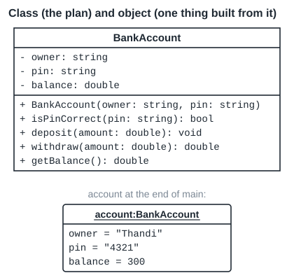
account is one object made from it. Its values are the ones at the end of main below.main may use only the public members:
#include <iostream>
#include "BankAccount.h"
int main() {
BankAccount account("Thandi", "4321");
account.deposit(500);
std::cout << account.withdraw(200) << std::endl;
std::cout << account.withdraw(900) << std::endl;
std::cout << account.getBalance() << std::endl;
std::cout << account.isPinCorrect("1234") << std::endl;
return 0;
}Download this file (it saves as main.cpp)
It prints:
200 0 300 0
withdraw(900) returns 0 because 900 is more than the balance of 300, so the balance stays 300. isPinCorrect("1234") returns false, which cout prints as 0.
| Condition | True means | False means |
|---|---|---|
amount > balance | not enough money: return 0 and change nothing | take the money off the balance and return the amount |
The default access is the one difference between struct and class that a test asks about (Tutorial 3):
#include <iostream>
struct Record {
int value;
};
class Counter {
int count;
};
int main() {
Record record;
Counter counter;
record.value = 5;
counter.count = 5;
std::cout << record.value << std::endl;
return 0;
}record.value = 5; compiles, because a struct member is public by default. counter.count = 5; does not:
main.cpp:15:11: error: ‘int Counter::count’ is private within this context
Tutorial 3 asks for the errors in this program:
#include <iostream>
#include <string>
class Student {
std::string name;
int studentNum;
public:
void setDetails(std::string n, int id) {
name = n;
studentNum = id;
}
}
int main() {
Student s1;
s1.setDetails("Alice", 24012345);
s1.studentNum = 24012345;
std::cout << s1.name << std::endl;
return 0;
}Write the errors you can find before you open the answer.
g++ reports three errors:
main.cpp:13:2: error: expected ‘;’ after class definition main.cpp:18:6: error: ‘int Student::studentNum’ is private within this context main.cpp:19:19: error: ‘std::string Student::name’ is private within this context
| Line | Problem | Fix |
|---|---|---|
| 13 (the closing brace of the class) | A class definition must end with };. The semicolon is missing. | Add the ;. |
| 18 | studentNum is private by default. | Change it through a public member function (a mutator), here setDetails. |
| 19 | name is private too. | Read it through a public function that returns it (an accessor), for example getName(). |
Try this
Lecture 4 asks: why is a public interface useful? Think of drawing money at an ATM. Write two sentences.
Hint: who needs to know how the balance is stored?
You can use the account (deposit, withdraw, check the PIN) without knowing how the bank does it. The public interface separates how the object works from how someone uses it, so the inside can change without changing the code that uses it. Lecture 4 links this to separation of concerns from COS 132.
The fixed Student program adds the semicolon, removes the direct access and uses a public accessor:
int main() {
Student s1;
s1.setDetails("Alice", 24012345);
std::cout << s1.getName() << std::endl;
return 0;
}It prints Alice.
Accessors and mutators
If the data is private, code outside the class needs public functions to read it and to change it. Lecture 4 names two kinds.
| Kind | What it does | Usual sign |
|---|---|---|
| accessor (getter) | Retrieves a private property without changing the object. | Often const behind the brackets, and often a name like getHealth(). |
| mutator (setter) | Changes a private property in some way. | Not const; it assigns to a member. |
Decide from what the function body does, not from its name. A function that only prints the members is an accessor too, because it reads the object and changes nothing (Tutorial 3).
Tutorial 3 gives this class, with function bodies added here so it can run:
#include <iostream>
class Character {
private:
int health;
int mana;
public:
Character() : health(100), mana(50) {}
int getHealth() const;
void takeDamage(int amount);
void printStatus() const;
void setMana(int m);
};
int Character::getHealth() const {
return health;
}
void Character::takeDamage(int amount) {
health -= amount;
}
void Character::printStatus() const {
std::cout << "health " << health << ", mana " << mana << std::endl;
}
void Character::setMana(int m) {
mana = m;
}
int main() {
Character hero;
hero.takeDamage(30);
hero.setMana(20);
hero.printStatus();
std::cout << hero.getHealth() << std::endl;
return 0;
}Download this file (it saves as main.cpp)
It prints:
health 70, mana 20 70
| Function | Kind | Reason |
|---|---|---|
getHealth() const | accessor | returns health, changes nothing |
takeDamage(int amount) | mutator | changes health (100 becomes 70) |
printStatus() const | accessor | reads both members to print them, changes nothing |
setMana(int m) | mutator | changes mana (50 becomes 20) |
A name can mislead. takeDamage has no set in its name but it is a mutator. printStatus has no get but it is an accessor. The trailing const is a sign: g++ will not let a const function change a member (see const in three places).
Tutorial 3 turns this struct and its functions into a class:
struct SmartDevice {
std::string deviceID;
bool isOn;
double powerConsumption; // in Watts
};
void turnOn(SmartDevice& dev);
void turnOff(SmartDevice& dev);
void updatePower(SmartDevice& dev, double watts);
bool getStatus(const SmartDevice& dev);Each function loses its SmartDevice& parameter: a member function already works on the object it is called on. getStatus took a const SmartDevice&, so as a member it becomes getStatus() const. The full answer, with a constructor and a test, is Example 1 on the Examples page.
Try this
Tutorial 3: write the class declaration (no bodies) for a LibraryBook with hidden properties title (string), isbn (string) and isCheckedOut (bool), mutators checkOut() and returnBook(), and accessors getIsCheckedOut() and getTitle().
Hint: the two accessors promise not to change the book.
class LibraryBook {
public:
LibraryBook(std::string title, std::string isbn);
void checkOut();
void returnBook();
bool getIsCheckedOut() const;
std::string getTitle() const;
private:
std::string title;
std::string isbn;
bool isCheckedOut;
};A constructor was added so the test can create a book. The accessors are const; the mutators are not. The full program is Practice task 1.
Check your answer: data under private:, the four functions under public:, const on the two accessors only, and }; at the end. Lecture 4 suggests public members first, so a reader sees the public interface first.
Header and implementation files
Lecture 4 ends with separation of concerns: the class is defined in a header file (.h), and its functions are implemented in an implementation file (.cpp). A test answer must use this split: Class Test 2A asked for a complete header, and for a member function written outside the class ("no inline coding").
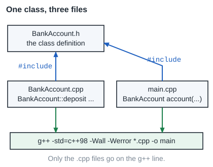
| Part | Where | Example |
|---|---|---|
| include guard | first and last lines of the .h file | #ifndef BANKACCOUNT_H, #define BANKACCOUNT_H ... #endif |
| class definition | .h file | members only; parameter names may be left out (Lecture 5) |
scope resolution :: | .cpp file | void BankAccount::deposit(double amount) says that deposit belongs to BankAccount |
| static member definition | .cpp file | int Counter::maxLimit = 100; (see static) |
From Class Test 2A Q3 and the 2026 Logistics class mock, Q8
Header files need include guards, and an include that is not needed loses marks. The header is named after the class.
Tutorial 3 gives the header of a Counter and asks for the .cpp file. Here are all three files:
#ifndef COUNTER_H
#define COUNTER_H
class Counter {
private:
int count;
static int maxLimit;
public:
Counter();
void increment(int value);
int getCount() const;
static void setMaxLimit(int limit);
};
#endifDownload this file (it saves as Counter.h)
#include "Counter.h"
int Counter::maxLimit = 100;
Counter::Counter() : count(0) {}
void Counter::increment(int value) {
if (this->count + value <= Counter::maxLimit) {
this->count += value;
}
}
int Counter::getCount() const {
return this->count;
}
void Counter::setMaxLimit(int limit) {
Counter::maxLimit = limit;
}Download this file (it saves as Counter.cpp)
#include <iostream>
#include "Counter.h"
int main() {
Counter c;
c.increment(60);
c.increment(50);
std::cout << c.getCount() << std::endl;
Counter::setMaxLimit(200);
c.increment(50);
std::cout << c.getCount() << std::endl;
return 0;
}Download this file (it saves as main.cpp)
It prints:
60 110
The run that printed this table shows the condition in increment on each call (a copy of the function with extra cout lines that print each step):
0 + 60 <= 100 is true, count is now 60 60 + 50 <= 100 is false, count is now 60 60 + 50 <= 200 is true, count is now 110
| Condition | True means | False means |
|---|---|---|
this->count + value <= Counter::maxLimit | the new total fits: add value | the total would pass the limit: count stays the same |
Three slips that stop the build:
1. A member default inside the class (C++11 only)
The Tutorial 3 slide declares int count = 0; inside Counter. That is C++11. With -std=c++98 -Wall -Werror it fails:
main.cpp:5:13: error: non-static data member initializers only available with ‘-std=c++11’ or ‘-std=gnu++11’ [-Werror=c++11-extensions]
In C++98, give the value in a constructor, for example Counter() : count(0) {}, as in the files above.
2. Forgetting Bank::
double getPrimeRate() { ... } defines a new, separate function, not the member. It cannot read the private primeRate:
main.cpp:14:16: error: ‘double Bank::primeRate’ is private within this context
3. No include guard
main.cpp includes Point.h, and Line.h includes it again. Without a guard the class is defined twice:
Point.h:1:7: error: redefinition of ‘class Point’
Two points from Tutorial 3 about writing the .cpp file:
- The word
staticappears only in the class. The definitionvoid Counter::setMaxLimit(int limit)does not repeat it. - A trailing
constis repeated:int Counter::getCount() const. Without it, the definition does not match the declaration.
Inline functions (Lecture 5): a function whose body is written inside the class is inline. The idea is that each call is replaced by the body. Lecture 5 says to keep inline functions short. In tests, write member functions outside the class unless the question shows them inside.
Try this
Without looking above, write the first two lines and the last line of Sensor.h, the header for a class Sensor.
Hint: look at the first and last lines of Counter.h.
#ifndef SENSOR_H #define SENSOR_H ... #endif
Any unique name works, but the class name in capitals with _H is the usual choice.
Check: #ifndef and #define use the same name, and #endif closes the file after };.
The this pointer
A parameter often has the same name as a member: setStats(int health, int score) in a class that has members health and score. Inside the function, which health does a line mean?
From Lecture 5, slide 16
The this pointer points to the memory location of the current object, the object the member function was called on.
Inside a member function a name means the nearest declaration. A parameter is nearer than a member, so the parameter shadows (hides) the member. this->health always means the member of the current object.
Tutorial 3: the values do not update.
void Player::setStats(int health, int score) {
health = health;
score = score;
}After p.setStats(100, 5); the program prints health 0, score 0. health = health; copies the parameter into itself. The member keeps the 0 it got in the constructor.
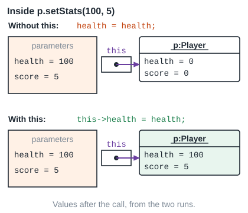
this points at p. Only this-> reaches the members.void Player::setStats(int health, int score) {
this->health = health;
this->score = score;
}Now it prints health 100, score 5. g++ gave no warning for the first version: it is legal code that does the wrong thing. Only a test run shows it.
this is a pointer, so this == &other asks “is other the same object as me?”. The assignment operator uses this test (see The assignment operator).
bool isSameObject(const Box& other) const {
return this == &other;
}a.isSameObject(a) and a.isSameObject(b) print 1 0.
Try this
Lecture 5 shows void BankAccount::deposit(double balance) { balance += balance; }. What happens to the account’s balance, and how do you fix the line?
Hint: which balance is nearer?
Nothing happens to the account. balance += balance; doubles the parameter, which disappears when the function ends. The fix is this->balance += balance;.
A second fix is to rename the parameter (for example amount); then no this-> is needed.
const in three places
Semester Test 1 Q14 (3 marks) gave const Server& operator()(const Server&) const and asked for an example that breaks each const. Each position means something different.
From Lecture 5, slide 11
const on a parameter: the parameter will not change. On the return type: what is returned cannot be changed. Behind the function: the function will not modify the object.
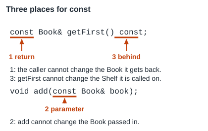
Shelf class below.The trailing const marks an accessor. Inside it, this points to a const object, so the function may only call other const member functions.
The Shelf class uses all three:
#include <iostream>
#include <string>
class Book {
private:
std::string title;
public:
Book(std::string title) : title(title) {}
std::string getTitle() const {
return title;
}
void setTitle(std::string title) {
this->title = title;
}
};
class Shelf {
private:
Book first;
int count;
public:
Shelf() : first("none"), count(0) {}
void add(const Book& book);
const Book& getFirst() const;
int getCount() const;
};
void Shelf::add(const Book& book) {
if (count == 0) {
first = book;
}
count++;
}
const Book& Shelf::getFirst() const {
return first;
}
int Shelf::getCount() const {
return count;
}
int main() {
Shelf shelf;
Book dune("Dune");
shelf.add(dune);
shelf.add(Book("Emma"));
std::cout << shelf.getFirst().getTitle() << " " << shelf.getCount() << std::endl;
return 0;
}Download this file (it saves as main.cpp)
It prints Dune 2.
Each const stops one kind of statement. Each row below is a separate program that differs in one line; each fails:
| const | The statement that breaks it | g++ says |
|---|---|---|
parameter (const Book& book in add) | book.setTitle("Changed"); inside add | passing ‘const Book’ as ‘this’ argument discards qualifiers [-fpermissive] |
return (const Book& from getFirst) | shelf.getFirst().setTitle("Changed"); in main | passing ‘const Book’ as ‘this’ argument discards qualifiers [-fpermissive] |
behind (getCount() const) | count = 0; inside getCount | assignment of member ‘Shelf::count’ in read-only object |
“Discards qualifiers” means: the object is const, but the function called on it (setTitle) is not.
A const object (or const reference) can call only const member functions. Here isOn() only reads, but it was not marked const:
class Lamp {
private:
bool on;
public:
Lamp() : on(false) {}
bool isOn() {
return on;
}
};
void show(const Lamp& lamp) {
std::cout << lamp.isOn() << std::endl;
}
int main() {
Lamp lamp;
show(lamp);
return 0;
}main.cpp:15:25: error: passing ‘const Lamp’ as ‘this’ argument discards qualifiers [-fpermissive]
Adding const behind isOn() fixes it. Mark every accessor const.
Try this
For const Plot& larger(const Plot& other) const; in a class Plot with an int area and a mutator grow(int), write one statement that each const forbids.
Hint: for each const, ask: which object can no longer change, and where is the code that would change it?
| const | Forbidden statement |
|---|---|
| return | p.larger(q).grow(5); in the calling code |
| parameter | other.grow(5); inside larger |
| behind | area = 0; inside larger |
Each of these was compiled, and each fails to build.
Check that your three statements change three different things: the returned Plot, the parameter, and the object itself.
static members
All banks use the same prime lending rate, set by the Reserve Bank. If each Bank object stored its own copy, the copies could disagree. A global variable would work, but it breaks data hiding. Lecture 5 uses a static member.
From Lecture 5, slide 9
A static member is shared across all objects of a class, and it does not need an object of the class to exist to be used.
| Rule | Example |
|---|---|
Declare it in the class with static. | static double primeRate; |
Define it once in the .cpp file, outside the class, with the class name and no static. | double Bank::primeRate = 0.105; |
| Call a static function on the class name. | Bank::getPrimeRate() |
A static function has no this, so it cannot use non-static members directly and cannot be const. | (Tutorial 3, Semester Test 1 Q13) |
In UML, a static member is underlined. Its C++ definition goes outside the class: the type, then Class::name, then the starting value. For example, a class GPS with the underlined attribute - addresses: Address** needs Address** GPS::addresses = NULL; (Class Test 2A, 2026, Q1(c)).
#include <iostream>
#include <string>
class Bank {
public:
Bank(std::string name) : bankName(name) {}
static double getPrimeRate();
static void setPrimeRate(double rate);
private:
std::string bankName;
static double primeRate;
};
double Bank::primeRate = 0.105;
double Bank::getPrimeRate() {
return primeRate;
}
void Bank::setPrimeRate(double rate) {
primeRate = rate;
}
int main() {
std::cout << Bank::getPrimeRate() << std::endl;
Bank absa("Absa");
Bank fnb("FNB");
Bank::setPrimeRate(0.11);
std::cout << Bank::getPrimeRate() << std::endl;
return 0;
}Download this file (it saves as main.cpp)
It prints:
0.105 0.11
The first line runs before any Bank object exists. setPrimeRate(0.11) changes the one shared value, for absa and fnb alike.
Tutorial 4 counts objects with a static member. The constructor adds 1, the destructor takes 1 off:
#include <iostream>
class Library {
static int libraryCount;
public:
Library() {
libraryCount++;
}
~Library() {
libraryCount--;
}
static int howMany() {
return libraryCount;
}
};
int Library::libraryCount = 0;
int main() {
std::cout << "A " << Library::howMany() << std::endl;
Library a;
Library b;
std::cout << "B " << Library::howMany() << std::endl;
{
Library c;
std::cout << "C " << Library::howMany() << std::endl;
}
std::cout << "D " << Library::howMany() << std::endl;
Library* d = new Library;
std::cout << "E " << Library::howMany() << std::endl;
delete d;
std::cout << "F " << Library::howMany() << std::endl;
return 0;
}Download this file (it saves as main.cpp)
new makes an object on the heap: it stays until delete removes it. A local object lives on the stack and is removed at the end of its block.
Output, with the count after each line of main:
| Printed | What changed since the last line |
|---|---|
| A 0 | no Library yet |
| B 2 | a and b constructed |
| C 3 | c constructed inside the block |
| D 2 | the block ended: c destroyed |
| E 3 | new Library: a heap object |
| F 2 | delete d: its destructor ran |
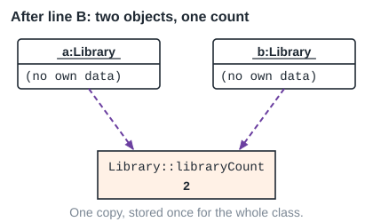
Semester Test 1 Q13 and Tutorial 3 test these errors. Each row is a separate program that differs in one line:
| Mistake | g++ says |
|---|---|
static double getPrimeRate() const; | static member function ‘static double Bank::getPrimeRate()’ cannot have cv-qualifier |
this->activeConnections = 0; in a static function | ‘this’ is unavailable for static member functions |
static void Counter::setMaxLimit(int limit) { in the .cpp file | cannot declare member function ‘static void Counter::setMaxLimit(int)’ to have static linkage [-fpermissive] |
static int totalStudents = 0; inside the class | ISO C++ forbids in-class initialization of non-const static member ‘Student::totalStudents’ |
declared, but int Student::totalStudents = 0; never written | the link step (which joins the compiled files into one program) fails: undefined reference to `Student::totalStudents' |
return vaultBalance * primeRate; in a static function (vaultBalance is not static) | invalid use of member ‘Bank::vaultBalance’ in static member function |
Bank::print(); where print is not static | cannot call member function ‘void Bank::print() const’ without object |
The first and second rows have the same cause: const behind a function is a promise about this, and a static function has no this.
Semester Test 1 Q11 gave a class Tracker with a static count and a display() const, and asked for the output. Work in a table: after each line write the count and what is printed. Example 5 traces a program of that kind.
Try this
In Class Test 2A, a GPS class has an underlined attribute addresses: Address**. Write the C++ statement that defines it and sets it to NULL.
Hint: what four parts does the Bank::primeRate definition have?
Address** GPS::addresses = NULL;
Type, then class name with ::, then the name, then the value. No static here; it is already in the class.
Check the four parts: Address**, GPS::, addresses, = NULL;. It goes in GPS.cpp, not in the header.
Constructors
The data members of a Bank are private, so main cannot give them their first values. Lecture 7 asks: how are the members set when the object is created? The answer is a constructor.
From Lecture 7, slides 7 and 8
A constructor is a specialised function that, at object construction, is used to populate all the member variables. It has the same name as the class, has no return type, can be overloaded (several constructors with different parameter lists), and default arguments reduce the number of constructors.
| Kind (Lecture 7) | What it does | UML |
|---|---|---|
| default constructor | takes no parameters; gives every member a default value | + Bank() |
| parameterised constructor | takes parameters and uses them to set the members | + Bank(bankName: string, balance: double) |
| copy constructor | takes an object of the same class and makes a copy of it (see The copy constructor) | + Bank(otherBank: const Bank&) |
Default arguments let one constructor act as both the default and the parameterised constructor. They are written in the declaration (the .h file or UML), not again in the .cpp file, and they must be given from right to left (Lecture 7).
This is the Lecture 7 Bank with one constructor that has two default arguments:
#include <iostream>
#include <string>
class Bank {
public:
Bank(std::string bankName = "myBank", double balance = 0.0);
void print() const;
private:
std::string bankName;
double vaultBalance;
};
Bank::Bank(std::string bankName, double balance) {
this->bankName = bankName;
vaultBalance = balance;
}
void Bank::print() const {
std::cout << bankName << " " << vaultBalance << std::endl;
}
int main() {
Bank b1;
Bank b2("Absa");
Bank* bptr = new Bank("Capitec", 1000);
b1.print();
b2.print();
bptr->print();
delete bptr;
return 0;
}Download this file (it saves as main.cpp)
It prints:
myBank 0 Absa 0 Capitec 1000
| Line in main | Arguments used |
|---|---|
Bank b1; | both defaults: "myBank", 0.0 |
Bank b2("Absa"); | "Absa" and the default 0.0 |
new Bank("Capitec", 1000) | both given; this object is on the heap and needs delete |
The stack holds local variables; they are removed at the end of their block. The heap holds objects made with new; they stay until delete.
Tutorial 4 shows when each constructor runs. This program prints a line from each constructor and from the destructor:
#include <iostream>
class Circle {
private:
double radius;
public:
Circle() {
radius = 0;
std::cout << "default" << std::endl;
}
Circle(double r) {
radius = r;
std::cout << "parameterised " << radius << std::endl;
}
Circle(const Circle& other) {
radius = other.radius;
std::cout << "copy " << radius << std::endl;
}
};
int main() {
Circle c1;
Circle c2(5.5);
Circle c3(c2);
Circle* c4 = new Circle(2);
delete c4;
return 0;
}Download this file (it saves as main.cpp)
default parameterised 5.5 copy 5.5 parameterised 2
1. Writing any constructor removes the free default constructor
From Tutorial 4, slides 12 and 15
Even if you write nothing, C++ gives a class a default constructor, a copy constructor, a destructor and a copy assignment operator. The moment you declare any constructor, the free default constructor is no longer given, so Author a; fails.
class Author {
public:
Author(std::string n, int b);
private:
std::string name;
int bookCount;
};
Author::Author(std::string n, int b) : name(n), bookCount(b) {}
int main() {
Author a;
return 0;
}main.cpp:15:10: error: no matching function for call to ‘Author::Author()’
Fix: write Author();, or give every parameter a default: Author(std::string n = "Unknown", int b = 0);.
2. The free default constructor leaves numbers unset
With no constructor written, Author a; compiles. A string member starts empty, but an int, double or pointer member is left holding whatever was in memory (Tutorial 4). This program compiles and runs, but valgrind reports the if on bookCount. valgrind is a tool that reports memory mistakes while a program runs; it is not on the lab PCs, so these pages show its reports for you:
int main() {
Author* a = new Author;
std::cout << "[" << a->name << "]" << std::endl;
if (a->bookCount > 0) {
std::cout << "has books" << std::endl;
}
delete a;
return 0;
}Conditional jump or move depends on uninitialised value(s) ERROR SUMMARY: 1 errors from 1 contexts (suppressed: 0 from 0)
3. Empty brackets declare a function
Tutorial 4 asks what Author a3(); does. It declares a function named a3 that returns an Author; no object is made. Write Author a3;.
main.cpp:17:12: error: empty parentheses were disambiguated as a function declaration [-Werror=vexing-parse] main.cpp:18:19: error: request for member ‘getName’ in ‘a3’, which is of non-class type ‘Author()’
4. Defaults from the right
float add(float a = 1, float b); gives a default to a but not to b, which comes after it:
main.cpp:3:30: error: default argument missing for parameter 2 of ‘float add(float, float)’
A call like add(5) would have to skip a and fill b; C++ fills arguments from the left, so defaults must come from the right.
Tutorial 4 gives Author(std::string n = "Unknown", int b = 0) and asks which constructor each line calls. A version that prints from the constructor and the destructor shows the order:
int main() {
Author a1;
Author a2("Poe");
Author a3("Tolkien", 12);
Author* a4 = new Author("King", 60);
delete a4;
return 0;
}Author(Unknown, 0) Author(Poe, 0) Author(Tolkien, 12) Author(King, 60) ~Author King ~Author Tolkien ~Author Poe ~Author Unknown
The heap Author (King) is destroyed at delete a4;. The three stack Authors are destroyed when main ends, in the reverse order of creation: Tolkien, Poe, then Unknown.
Try this
Lecture 7, Activity 2: write one UML constructor for Bank that acts as both the default and the parameterised constructor. The defaults are "myBank" and 0.0.
Hint: how does UML write one parameter with its type?
+ Bank(bankName: string = "myBank", balance: double = 0.0)
This is the line from Lecture 7, slide 16. In the .cpp file the defaults are not repeated: Bank::Bank(string bankName, double balance).
Check: no return type, the name is the class name, and each parameter is written name: type = value in UML. The full form is visibility name(parameter: type, ...): returnType; a constructor has no return type.
The initialisation list
Lecture 7 shows two ways to set members in a constructor: assignments in the body, or the initialisation section (also called the initialisation list or member initialiser list). Test questions that say “use an initialiser list” lose marks for assignments in the body.
From Lecture 7, slide 17
<ClassName>::<ClassName>(<parameters>) : <property>(<parameter/value>) { <additional code, like loops and selection statements> }
The list comes after a colon, before the body. Each entry is a member name with its first value in brackets. Entries are separated by commas.
Semester Test 1 asked for a constructor of this kind:
Astronomer::Astronomer(std::string name) : observerName(name), sightings(0) {}
int main() {
Astronomer a("Hubble");
a.print();
return 0;
}Astronomer a("Hubble"); then a.print(); prints Hubble 0. The empty body {} is still required.
In many classes the list and the body give the same result. Three cases need the list:
1. A const member
A const member can get a value only once, when it is made. Assigning in the body is too late:
Ticket::Ticket(int n) {
number = n;
}main.cpp:11:1: error: uninitialized const member in ‘const int’ [-fpermissive] main.cpp:12:10: error: assignment of read-only member ‘Ticket::number’
With the list it works: Ticket::Ticket(int n) : number(n) {}, and t.getNumber() returns 7.
2. A member object with no default constructor
A Car holds an Engine object, and Engine has only Engine(int hp). Before the body of Car(int hp) starts, the engine must already exist:
Car(int hp) {
engine = Engine(hp);
}
};
int main() {
Car car(150);
return 0;
}main.cpp:16:15: error: no matching function for call to ‘Engine::Engine()’
The list builds the engine with the right value: Car(int hp) : engine(hp) { ... }. Printing from each constructor and destructor gives this order:
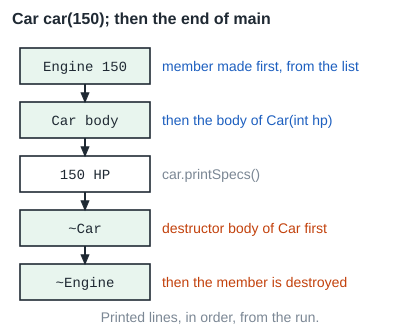
3. The order is the order of declaration
Members are set in the order they are declared in the class, not the order of the list. Here first is declared first, so first(second + 1) runs while second is still unset. With -Wall -Werror this does not build:
Pair(int value) : second(value), first(second + 1) {}
void print() const {
std::cout << first << " " << second << std::endl;
}
};
int main() {
Pair p(4);
p.print();
return 0;
}main.cpp:6:7: error: ‘Pair::second’ will be initialized after [-Werror=reorder] main.cpp:5:7: error: ‘int Pair::first’ [-Werror=reorder] main.cpp:9:3: error: when initialized here [-Werror=reorder] main.cpp:9:42: error: member ‘Pair::second’ is used uninitialized [-Werror=uninitialized]
Write the list in the same order as the declarations, and do not use one member to set an earlier one.
Lecture 7 rewrites the Bank constructor with the list. A pointer member can be set in the list or in the body (the slide sets bankAccounts = NULL; in the body and notes it could be in the list). Code that must run after the members exist, like a throw check or a loop that fills an array, goes in the body.
Practice task 4 asks you to rewrite the body version as a list.
Try this
Write the constructor Sensor::Sensor(double reading) with an initialisation list that sets reading, and a body that adds 1 to the static sensorCount and then sets id to it.
Hint: which of the three members belongs to this object only?
Sensor::Sensor(double reading) : reading(reading) {
sensorCount++;
id = sensorCount;
}reading(reading) is correct: inside the brackets the name means the parameter; outside it names the member. The mock test uses this constructor in its Greenhouse scenario.
Check the colon, the brackets, and that the static member is not in the list. A static member is defined once in the .cpp file (see static).
Automatic type conversion
A function takes a const Rating&, but the call is review(5). 5 is an int, not a Rating. Does it compile?
From Tutorial 4, slides 18 and 19
A constructor that can be called with a single argument tells C++ how to convert that argument into your class, and it then does so automatically. Automatic conversion works only when a suitable one-argument constructor exists.
“Can be called with one argument” includes a constructor whose other parameters all have defaults.
#include <iostream>
class Rating {
private:
int stars;
public:
Rating(int stars) : stars(stars) {
std::cout << "Rating(" << stars << ")" << std::endl;
}
int getStars() const {
return stars;
}
};
void review(const Rating& r) {
std::cout << "review " << r.getStars() << std::endl;
}
int main() {
review(5);
return 0;
}Download this file (it saves as main.cpp)
It prints:
Rating(5) review 5
The first line shows that a temporary Rating(5) was made before review ran.
If Rating has only Rating(int stars, std::string comment), there is no one-argument constructor, so review(5) fails:
main.cpp:18:10: error: invalid initialization of reference of type ‘const Rating&’ from expression of type ‘int’
Semester Test 1 asked about a constructor with defaults for every parameter. This one is a default constructor and a conversion constructor at the same time:
Item(float value = 0.0f, int size = 0, std::string text = "")
: value(value), size(size), text(text) {}int main() {
Item a;
a.print();
show(2.5f);
return 0;
}0 0 [] 2.5 0 []
Item a; uses all three defaults. show(2.5f) turns 2.5 into Item(2.5f, 0, "").
Try this
A class Meter has only Meter(int reading, int limit = 100). A function is void log(const Meter& m). Does log(40); compile? Explain in one sentence.
Hint: count the parameters without a default.
Yes. The constructor can be called with one argument because limit has a default, so 40 becomes Meter(40, 100).
The test is the number of parameters without defaults: exactly one means automatic conversion is possible.
The copy constructor
Lecture 8 models a BankBackUp that keeps a snapshot of a Bank. If the backup only stored the address of the bank, every change to the bank would show in the backup, so it would not be a snapshot.
From Lecture 8, slides 6 and 7
Shallow copy: the address in one variable is copied into another, so both point to the same memory and a change through one shows through the other. Deep copy: a new variable is created and filled with the same data, so the two are independent.
From Tutorial 4, slide 20
C++ gives a class a copy constructor if none is written. It copies each member as it is: for a pointer it copies the address. For plain members that is fine.
| Where | Form |
|---|---|
| UML | + Bank(otherBank: const Bank&) |
| class definition | Bank(const Bank&); (the parameter name is not needed) |
| .cpp file | Bank::Bank(const Bank& otherBank) { ... } |
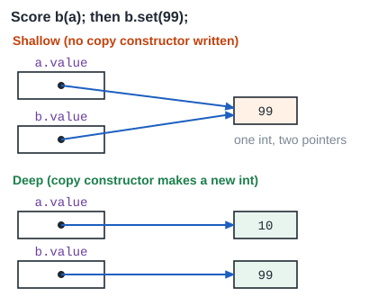
Score b(a); then b.set(99);, with and without a copy constructor.A Score holds an int*. Without a copy constructor:
int main() {
Score a(10);
Score b(a);
b.set(99);
std::cout << a.get() << " " << b.get() << std::endl;
return 0;
}It prints 99 99: changing b changed a. When main ends, both destructors delete the same int. valgrind reports:
Invalid free() / delete / delete[] / realloc() ERROR SUMMARY: 1 errors from 1 contexts (suppressed: 0 from 0)
The deep copy constructor makes a new int with the same value:
Score(const Score& other) : value(new int(*other.value)) {}
};
int main() {
Score a(10);
Score b(a);
b.set(99);
std::cout << a.get() << " " << b.get() << std::endl;
return 0;
}Now the program prints 10 99 and valgrind reports 0 errors.
Why const Score& and not Score?
From Lecture 8, slide 11 and Tutorial 4, slide 23
If the copy constructor took its parameter by value, passing the argument would itself need a copy, which calls the copy constructor again: an infinite chain of calls. const promises not to change the source, and lets a const object be copied.
main.cpp:9:3: error: invalid constructor; you probably meant ‘Score (const Score&)’
When does the copy constructor run? This class prints from each special function. The copy adds 10 to the id, so each copy shows a new id:
int main() {
std::cout << "line 1: Box b1(1);" << std::endl;
Box b1(1);
std::cout << "line 2: Box b2(b1);" << std::endl;
Box b2(b1);
std::cout << "line 3: Box b3 = b1;" << std::endl;
Box b3 = b1;
std::cout << "line 4: byValue(b1);" << std::endl;
byValue(b1);
std::cout << "line 5: byReference(b1);" << std::endl;
byReference(b1);
std::cout << "line 6: b3 = b2;" << std::endl;
b3 = b2;
std::cout << "end of main" << std::endl;
return 0;
}line 1: Box b1(1); Box(1) line 2: Box b2(b1); copy of 1 -> 11 line 3: Box b3 = b1; copy of 1 -> 11 line 4: byValue(b1); copy of 1 -> 11 inside byValue ~Box 11 line 5: byReference(b1); inside byReference line 6: b3 = b2; operator= 11 gets 11 end of main ~Box 11 ~Box 11 ~Box 1
| Line | Function that runs | Why |
|---|---|---|
Box b2(b1); | copy constructor | a new object made from an existing one |
Box b3 = b1; | copy constructor | b3 is being created, so this is not assignment |
byValue(b1); | copy constructor, then the destructor of the copy | pass by value makes a copy; it ends with the function |
byReference(b1); | none | a reference is another name for b1 |
b3 = b2; | operator= | both objects already exist (see The assignment operator) |
Tutorial 4, Activity 2: write the deep copy constructor for a Book that holds Chapter** chapters (a dynamic array of pointers, each to a dynamic Chapter).
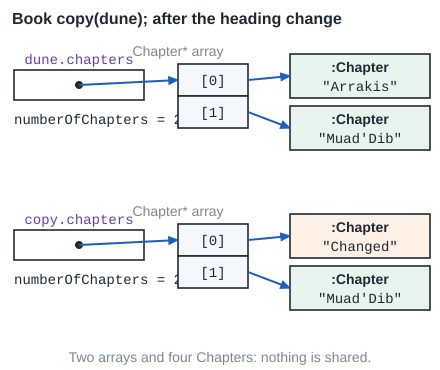
Book copy(dune);: two arrays and four Chapters; nothing is shared.Book::Book(const Book& other)
: title(other.title), numberOfChapters(other.numberOfChapters) {
chapters = new Chapter*[numberOfChapters];
for (int i = 0; i < numberOfChapters; ++i) {
chapters[i] = new Chapter(*(other.chapters[i]));
}
}The loop, from an instrumented run with two chapters:
i = 0: copied Arrakis i = 1: copied Muad'Dib loop stops: i = 2 is not < 2
| Pass | i | i < numberOfChapters | Body |
|---|---|---|---|
| 1 | 0 | true (0 < 2) | chapters[0] = a new copy of “Arrakis” |
| 2 | 1 | true (1 < 2) | chapters[1] = a new copy of “Muad'Dib” |
| - | 2 | false (2 < 2) | loop ends |
The test program changes the copy’s first chapter and prints both books:
Arrakis | Changed 2 2
new Chapter(*(other.chapters[i])): other.chapters[i] is a pointer, * gives the Chapter it points to, and that Chapter is passed to Chapter’s copy constructor. The slide assumes other.chapters and every other.chapters[i] are not NULL.
Try this
Lecture 8 asks: when a parameter is passed by value, which constructor runs? And can the copy constructor take its parameter by value?
Hint: look at line 4 of the Box output.
The copy constructor runs (see byValue(b1) above). It cannot take its parameter by value: that would need a copy to make the copy, an endless chain. g++ rejects it with “invalid constructor”.
The same steps can be drawn as a flowchart with the rules in Flowchart rules (in The destructor section).
The destructor
Lecture 8 asks whether all memory is released when a Bank that holds dynamic accounts is deleted. The free destructor destroys each member, but it does not delete heap memory that the object made with new (Tutorial 4).
From Lecture 8, slides 15 and 16
A destructor is a special function that takes no parameters and has no return type, with the special purpose of deallocating any dynamic memory allocated by the object. It is invoked when the object goes out of scope, and when delete is used.
| Where | Form |
|---|---|
| class definition | ~Bank(); |
| .cpp file | Bank::~Bank() { ... } |
| UML (C++ notation, Lecture 8) | + ~Bank() |
Lecture 8 asks two more questions. Can a destructor be overloaded? No: it has no parameters, so there is only one form. Can it be const? No. g++ says:
main.cpp:3:3: error: destructors may not have parameters main.cpp:3:11: error: destructors may not be cv-qualified
Objects are destroyed in the reverse order they were made in their block. A heap object is destroyed at delete:
int main() {
Tag a("a");
Tag* h = new Tag("h");
{
Tag b("b");
Tag c("c");
std::cout << "end of block" << std::endl;
}
delete h;
std::cout << "end of main" << std::endl;
return 0;
}construct a construct h construct b construct c end of block destroy c destroy b destroy h end of main destroy a
Lecture 8’s own example (with class bodies added so it runs) shows the copy made by addAccount:
int main() {
Bank* bank = new Bank();
BankAccount bc;
bank->addAccount(bc);
delete bank;
std::cout << "end of main" << std::endl;
return 0;
}Bank() BankAccount() BankAccount(copy) ~Bank() ~BankAccount() end of main ~BankAccount()
addAccount stores a new BankAccount(bc) (a copy). delete bank runs ~Bank, which deletes that copy. bc itself is destroyed at the end of main.
What a destructor deletes depends on ownership, which the UML relationship shows. In a composition (filled diamond) the whole owns its parts: the parts are made and deleted by the whole. In an aggregation (hollow diamond) the whole only points at parts that exist on their own.
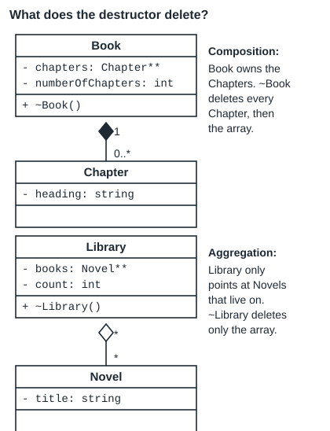
Composition: an empty destructor leaks
A leak is memory taken with new that is never given back with delete.
Book::~Book() {} deletes nothing. After delete book; valgrind reports:
definitely lost: 16 bytes in 1 blocks indirectly lost: 80 bytes in 2 blocks ERROR SUMMARY: 1 errors from 1 contexts (suppressed: 0 from 0)
16 bytes is the array of 2 pointers (8 bytes each); the 80 bytes are the 2 Chapters it pointed to. The Tutorial 4 destructor fixes it:
Book::~Book() {
if (chapters != NULL) {
for (int i = 0; i < numberOfChapters; i++) {
delete chapters[i];
}
delete[] chapters;
chapters = NULL;
}
}Aggregation: deleting the parts is wrong
Library only points at Novels that main made. Its destructor must delete the array only:
Library::~Library() {
delete[] books;
}If ~Library also deletes each Novel, main later reads and deletes Novels that are gone. The program still prints Emma still exists, but valgrind reports:
Invalid read of size 8 Invalid read of size 2 Invalid free() / delete / delete[] / realloc() ERROR SUMMARY: 8 errors from 7 contexts (suppressed: 0 from 0)
A wrong program can print the expected output. Only valgrind (or a crash) shows the problem.
Class Test 2A Q2 and the Logistics UML mock (Q3, Q4) asked for a destructor flowchart; Semester Test 1 Q23 asked for one of operator=. Here is the Book destructor drawn with steps in words.
Flowchart rules
- An oval (terminator) for Start and End; Start names the function.
- A rectangle (process) for each step, written in words: “Delete chapter i”, not
delete chapters[i];. - A diamond (decision) holds one yes/no question; its two arrows are labelled Yes and No.
- A loop is a decision with an arrow back to it; every arrow has a direction.
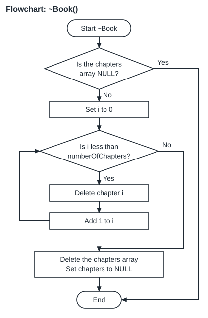
An instrumented run shows the loop in the destructor of each Book in the copy program above (the copy is destroyed first):
~Book Dune, i = 0: delete Changed ~Book Dune, i = 1: delete Muad'Dib ~Book Dune, i = 0: delete Arrakis ~Book Dune, i = 1: delete Muad'Dib
| Condition | True means | False means |
|---|---|---|
chapters != NULL | there is an array: delete its Chapters, then the array | nothing to delete; skip to the end |
| Pass (copy, destroyed first) | i | i < numberOfChapters | Body |
|---|---|---|---|
| 1 | 0 | true (0 < 2) | delete the Chapter “Changed” |
| 2 | 1 | true (1 < 2) | delete the Chapter “Muad'Dib” |
| - | 2 | false (2 < 2) | loop ends; delete the array, set chapters to NULL |
The original dune repeats the same two passes for its own Chapters (“Arrakis”, “Muad'Dib”).
A Book with no chapters keeps chapters as NULL, so its destructor skips the loop. Copying an empty Book makes new Chapter*[0], which is not NULL:
~Book: chapters != NULL is true ~Book: chapters != NULL is false
The first line is the copy (its array has 0 slots, but it exists and is deleted); the second is the original.
Try this
A Garden holds Plant** plants (composition, numPlants of them) and Gardener** helpers (aggregation). Write Garden::~Garden().
Hint: which relationship means the Garden owns the part?
Garden::~Garden() {
for (int i = 0; i < numPlants; i++) {
delete plants[i];
}
delete[] plants;
delete[] helpers;
}Delete each owned Plant, then the plants array. For the helpers delete only the array; the Gardeners belong to someone else.
Check: delete for one object, delete[] for an array made with new ...[n].
The assignment operator
b = a; where both objects already exist. The free assignment operator copies each member as it is, so it has the same shallow-copy problem as the free copy constructor, plus one more: the memory b held before is lost.
From Tutorial 5, Assignment Operator slides
Copy constructor: creates a new object from an already existing object of the same class. Assignment operator: an already existing object’s members are assigned the same values as the other object. Format: <ClassName>& operator=(const <ClassName>&)
UML: + operator=(other: const Score&): Score&. The four steps:
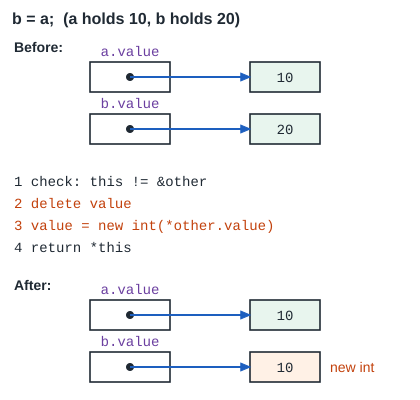
Score& Score::operator=(const Score& other) {
if (this != &other) {
delete value;
value = new int(*other.value);
}
return *this;
}int main() {
Score a(10);
Score b(20);
Score c(30);
b = a;
b.set(99);
std::cout << a.get() << " " << b.get() << std::endl;
a = a;
std::cout << a.get() << std::endl;
a = b = c;
std::cout << a.get() << " " << b.get() << " " << c.get() << std::endl;
return 0;
}10 99 10 30 30 30
| Condition | True means | False means |
|---|---|---|
this != &other | different objects: delete the old int and copy | self-assignment (a = a): change nothing |
a = b = c; works because b = c returns b (by reference), which is then assigned to a.
Each step has a reason. Each program below leaves one out:
| Left out | What happens |
|---|---|
| the whole operator (free one used) | b = a; b.set(99); prints 99 99. valgrind: Invalid free() / delete / delete[] / realloc(), definitely lost: 4 bytes in 1 blocks, indirectly lost: 0 bytes in 0 blocks, ERROR SUMMARY: 2 errors from 2 contexts (suppressed: 0 from 0). The 20 is leaked; the 10 is deleted twice. |
| the self check | a = a; deletes the int, then copies from the deleted int. It printed 10, but valgrind reports Invalid read of size 4. |
return *this; on every path | control reaches end of non-void function [-Werror=return-type] |
Tutorial 5’s model answer for a String class allocates new char[strlen(other.data)]. That is one byte short: strcpy also copies the closing '\0'. The run printed hello, but valgrind reports:
Invalid write of size 1 Invalid read of size 1 ERROR SUMMARY: 2 errors from 2 contexts (suppressed: 0 from 0)
The fix is new char[strlen(other.data) + 1], after which valgrind reports 0 errors. (The slide also writes return this; where return *this; is needed; that text may be a slide typo.)
With a composition and an aggregation in one class, operator= deep-copies the owned parts and shares the others. A Garden owns its Plants and points at helper Gardeners:
Garden& Garden::operator=(const Garden& other) {
if (this == &other) {
return *this;
}
for (int i = 0; i < numPlants; i++) {
delete plants[i];
}
delete[] plants;
delete[] helpers;
numPlants = other.numPlants;
plants = new Plant*[numPlants];
for (int i = 0; i < numPlants; i++) {
plants[i] = new Plant(*other.plants[i]);
}
numHelpers = other.numHelpers;
helpers = NULL;
if (numHelpers > 0) {
helpers = new Gardener*[numHelpers];
for (int i = 0; i < numHelpers; i++) {
helpers[i] = other.helpers[i];
}
}
return *this;
}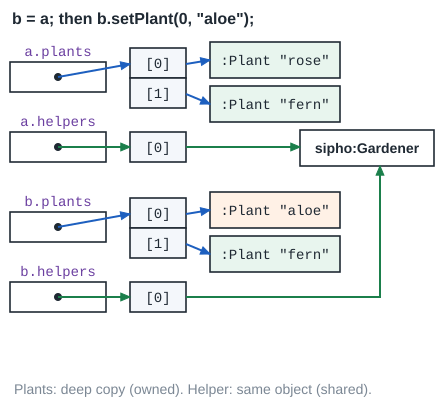
b = a; and b.setPlant(0, "aloe");.rose fern | Sipho aloe fern | Sipho
Lerato, b’s old helper, is not deleted: only b’s array of helper pointers was. Example 7 traces this operator line by line.
Try this
C++ gives every class four special functions for free (Tutorial 4). Name them, and say which three a class with a dynamic member must write itself.
Hint: Tutorial 4, slide 12.
Free: default constructor, copy constructor, destructor, copy assignment operator. A class that owns dynamic memory writes the copy constructor, the destructor and the assignment operator (it usually writes its own constructors too).
Assumed
The name “rule of three” for this group is common in C++ books but does not appear in the COS 110 slides.
The three functions go together: if one is needed because of a pointer member, the other two are needed for the same reason.
Object lifetime
Semester Test 1 ended with an object diagram: draw the objects that exist at a marked line. That needs the lifetime of each object: when it is made and when it is gone.
| Object | Made | Gone |
|---|---|---|
| local (stack) object | at its line | at the end of its block }, in reverse order |
| heap object | at new | at delete, or never (a leak) |
| member object | before the constructor body of its owner | after the destructor body of its owner |
| parameter passed by value | at the call (copy constructor) | when the function ends |
| static member | before main, once for the class | after main |
A Bus owns its Seats; Seat counts live seats in a static member:
#include <iostream>
#include <string>
class Seat {
private:
int number;
static int seatCount;
public:
Seat(int number = 0) : number(number) {
seatCount++;
std::cout << " Seat " << number << " made, seatCount " << seatCount << std::endl;
}
~Seat() {
seatCount--;
std::cout << " Seat " << number << " gone, seatCount " << seatCount << std::endl;
}
static int getSeatCount() {
return seatCount;
}
};
int Seat::seatCount = 0;
class Bus {
private:
std::string route;
Seat** seats;
int numSeats;
public:
Bus(std::string route, int numSeats) : route(route), numSeats(numSeats) {
std::cout << " Bus " << route << " body starts" << std::endl;
seats = new Seat*[numSeats];
for (int i = 0; i < numSeats; i++) {
seats[i] = new Seat(i + 1);
}
}
~Bus() {
std::cout << " ~Bus " << route << " starts" << std::endl;
for (int i = 0; i < numSeats; i++) {
delete seats[i];
}
delete[] seats;
}
};
int main() {
std::cout << "line 1: Seat spare(9);" << std::endl;
Seat spare(9);
std::cout << "line 2: Bus* b = new Bus(\"R5\", 2);" << std::endl;
Bus* b = new Bus("R5", 2);
std::cout << "line 3: count is " << Seat::getSeatCount() << std::endl;
std::cout << "line 4: { Bus local(\"R7\", 1); }" << std::endl;
{
Bus local("R7", 1);
}
std::cout << "line 5: delete b;" << std::endl;
delete b;
std::cout << "line 6: count is " << Seat::getSeatCount() << std::endl;
return 0;
}Download this file (it saves as main.cpp)
line 1: Seat spare(9);
Seat 9 made, seatCount 1
line 2: Bus* b = new Bus("R5", 2);
Bus R5 body starts
Seat 1 made, seatCount 2
Seat 2 made, seatCount 3
line 3: count is 3
line 4: { Bus local("R7", 1); }
Bus R7 body starts
Seat 1 made, seatCount 4
~Bus R7 starts
Seat 1 gone, seatCount 3
line 5: delete b;
~Bus R5 starts
Seat 1 gone, seatCount 2
Seat 2 gone, seatCount 1
line 6: count is 1
Seat 9 gone, seatCount 0The seat loop in new Bus("R5", 2):
| Pass | i | i < numSeats | Body |
|---|---|---|---|
| 1 | 0 | 0 < 2 true | new Seat(1); seatCount 2 |
| 2 | 1 | 1 < 2 true | new Seat(2); seatCount 3 |
| - | 2 | 2 < 2 false | loop ends |
The object diagram at line 3 (after new Bus("R5", 2)):
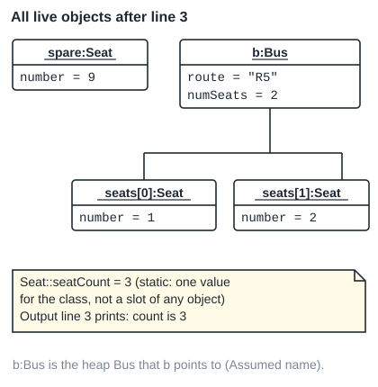
local does not exist yet.At line 6 the diagram has only spare:Seat: the R7 Bus ended with its block, and the R5 Bus was deleted. The count lines agree: 3, then 1.
Assumed
How to name a heap object that only a pointer reaches is not fixed by the slides. This page names it after the pointer (b:Bus).
Object diagram rules
- One box per object that exists at the marked line, headed
name:Class. - One line
attribute = valuefor each data member; static members are not drawn in the box. - An array element is named after its slot, for example
seats[0]:Seat. - A line (link) joins an object to each object one of its pointers reaches.
Use a table: one row per line of main, with what is made and what is gone. For line 4:
| Line | Made | Gone | seatCount after |
|---|---|---|---|
| 1 | spare (Seat 9) | - | 1 |
| 2 | heap Bus R5, Seats 1 and 2 | - | 3 |
| 4 | Bus R7 (local), its Seat 1 | at }: Bus R7 and its Seat 1 | 3 |
| 5 | - | Bus R5 and its two Seats | 1 |
| end | - | spare | 0 |
Try this
In the Bus program, what would seatCount be after line 5 if ~Bus were empty?
Hint: which Seats are made with new, and who deletes them?
4. With an empty ~Bus, no Seat made with new is ever destroyed. After line 4 the count is 4 (the R7 Seat stays alive), and line 5 subtracts nothing. A run with an empty ~Bus prints:
line 1: Seat spare(9);
Seat 9 made, seatCount 1
line 2: Bus* b = new Bus("R5", 2);
Bus R5 body starts
Seat 1 made, seatCount 2
Seat 2 made, seatCount 3
line 3: count is 3
line 4: { Bus local("R7", 1); }
Bus R7 body starts
Seat 1 made, seatCount 4
~Bus R7 starts
line 5: delete b;
~Bus R5 starts
line 6: count is 4
Seat 9 gone, seatCount 3valgrind then reports:
definitely lost: 24 bytes in 2 blocks indirectly lost: 12 bytes in 3 blocks ERROR SUMMARY: 2 errors from 2 contexts (suppressed: 0 from 0)
Count the Seats alive after line 5 with an empty destructor: spare, the two R5 Seats and the R7 Seat, which gives 4.